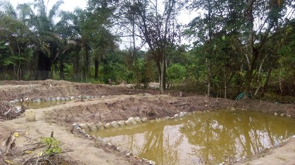
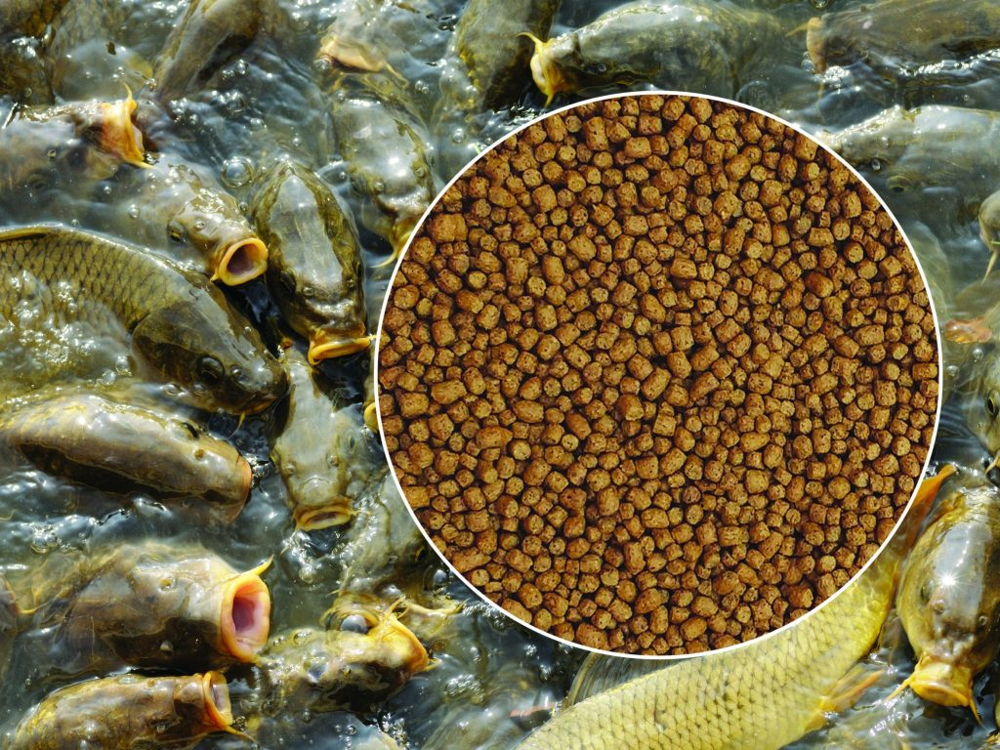

The fish farming business is very lucrative in Nigeria and you can be successful
if you are determined and can also employ the right strategies in the business.
Yet as lucrative as fish farming can be,
a lack of proper information concerning the business can lead to huge losses.
Yet as lucrative as fish farming can be, a lack of proper information concerning the business can lead to huge losses.
Here are the major steps you need to take before embarking on this business.
1. Write a business plan
It is a very crucial part of setting up your business and should be the first step. Writing a business plan involves carrying out a feasibility study, documenting goals and objectives, and doing proper market research to know what is obtainable.
A well-documented business plan can give you access to loans and other financial support both from the government and investors. In writing a fish farming business plan, the following information needs to be documented;
Executive Summary
Goals and Objectives
Products and Services
Location
Market Research and Strategy
SWOT Analysis
Financial Projection
Size
Possible business expansion
2. Register your business
After the business plan has been created, the next step is to register your business. By registering your business, you become one of the certified business owners in Nigeria and can enjoy every benefit tailored to registered businesses.
You will need to register with the Corporate Affairs Commission (CAC), the agency in charge of business registration in Nigeria.
3. Get adequate training
To be successful in Fish farming, you need to get adequate knowledge, technical skills, and training.
Training here doesn’t mean the kind of training you get from one-day seminars as proper training will help you identify healthy fish, prevent disease outbreaks, understand the type of medication, and the time of administration of the medication.
In other to run the farm effectively, you can learn under a practicing fish farmer as an apprentice or get an expert. You just also take some online courses, read books and do lots of research via Google.
4. Get a good location for the fish pond
After determining the type of fish you want to breed the next thing is to find a space for the fish pond. A fish pond can be situated almost anywhere because fish doesn’t cause any environmental disturbance.
You can either hire or buy land, depending on how you intend to run it. Also, if you have leftover space in your compound that can accommodate two or three ponds, you can use it.

5. Construct the pond, a borehole, and overhead tank
As a starter, it is best for you to consult an expert in other to know the pond type that is best for you based on where you intend to carry out the activities of the farm.
There are three major types of ponds; and they are, earthen pond, concrete pond, and plastic tank pond.
In addition to the fish pond, you’ll also require a borehole and overhead tank to supply water to the fish. Ensure you get experts to do this so as to avoid any mistakes that might bring about a loss in the future.
6. Determine the species of fish you want to breed
There are numerous species of fish around the world. All of those species are not suitable for farming according to the weather and climate of Nigeria. That is why the most popular fish usually used in this business is the catfish.
The catfish equally have other species so you might have to consult an expert to determine which one would thrive well in your environment.
7. Purchase your fingerlings or juveniles
Fingerlings are the baby fish you’ll need to start your farm and are also known as juveniles.
The best practice if you’re just starting a fish farm in Nigeria is to buy juveniles.
There are fish farmers that specialize in hatching fingerlings and selling juveniles.
8. Choose the right fish feed
For successful fish farming in Nigeria and better production, you have to feed the fish good and nutritious supplementary fish feed.
You can also use some low cost conventional or unconventional animal by-products and plant residue in fish feed.
There are three means of food for your fish.
Natural fish feed. This is found naturally in the pond. This includes; detritus, bacteria, plankton, worms, insects, snails, aquatic plants, and fish (yes, fish eat fish if they`re hungry).
Supplementary fish feed. This usually includes cheap materials locally available such as terrestrial plants, kitchen wastes, or agricultural by-products. The supplementary feed may be good, but they are not for the serious fish farmers (except if he includes the other types of feeds). Many people who are into fish farming in Nigeria are using supplementary feeds. some to their profit, others to their loss.
Complete feed. This is a carefully made fish feed. They`re usually of good ingredients and nutrients, made by the experts who understand the perfect formula for the fish at a different stage.

9. Marketing
As with most businesses, marketing is very important as you need people to know about what you do.
Start with a marketing strategy that should involve creating a website and social media handles. Word of mouth should also be used. Take the awareness to restaurants, supermarkets, and everywhere that needs fish.